許せない掃除機と進まないフォトブック [梅吉]
ことしもぼちぼち衣替えを始めています。
もちろん梅吉さんはしっかり手伝ってくれていますよ＾＾
渾身のお手伝いの様子でーす。
（31秒 音無です）
・・・・・(⌒-⌒;
圧出袋から空気を抜く掃除機がどうしても許せない様子。
掃除機のモーター音が入っている方が雰囲気あるんですが
私のケタケタ笑いも入っているので音を消しました。
掃除機に体を吸われても臆することなくアタックしてくる根性は褒めてあげたいwww
･゜ﾟ･*:.｡..｡.:*･゜ﾟ･*:.｡. .｡.:*･゜ﾟ･*･゜ﾟ･*:.｡..｡.:*･゜ﾟ･*:.｡..｡.:*･゜ﾟ･*
昨年末にフォトブックは4月下旬（梅吉の推定誕生日）までに作ると記事にしていたのですが・・・
現在ぜーんぜん作業が進んでおりませんw
今月中はもう諦めて梅吉のうちの子記念日（7月下旬）に期限を延長。
これはどうしても守らねば！
毎年一番悩むのが表紙の写真です。
今の所候補は
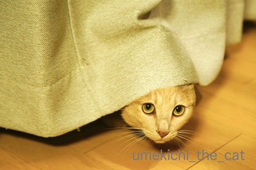
カーテンからひょっこり（これで「ひょっこりはん」という芸人さんの存在を知りました）
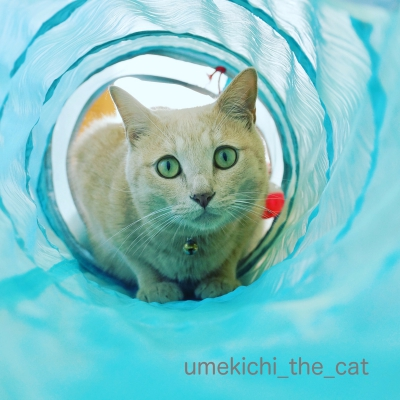
ニャン生初のキャットトンネル
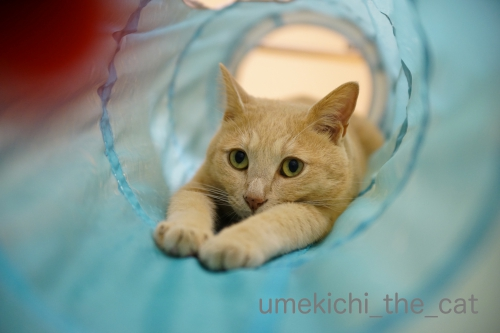
ウォータースライダー風
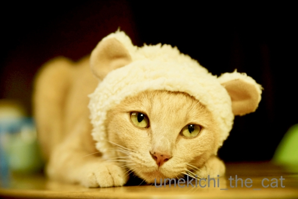
ねこくまちゃん（やさぐれ感あり）
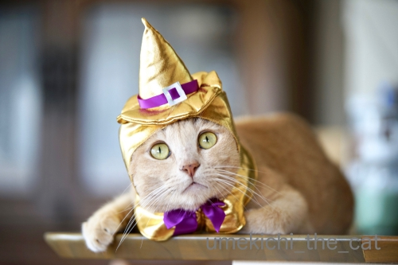
ハロウィンの魔女さん（ゴージャスでしょ）
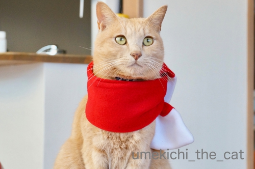
赤いマフラー（きりりっ）
あたりなんですが、悩むー！！
このところ時間ができると写真ライブラリーとにらめっこの日々です。
お返事書けないのはこのせいもあるのです・・・
どうぞお許しくださいませm(_ _)m
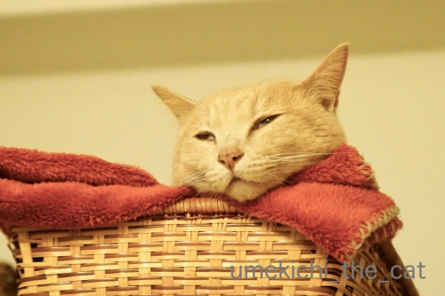
アルバムの中には変顔や白目写真は欠かせませんよ(*>艸<)
 ↑ガブッと一押し↑
↑ガブッと一押し↑
くつしたにゃんさんから伏見稲荷大社にある眼力社の豆書をいただきました！
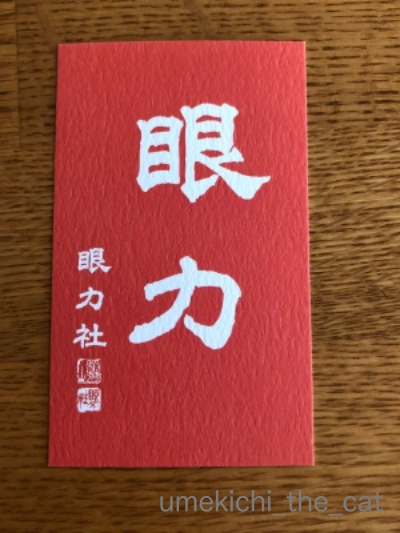
くつしたにゃんさんが伏見稲荷に行った日、この豆書が届いた日
針穴に糸が一回で通った。
ご利益かしら♪
くつしたにゃんさんありがとう！
もちろん梅吉さんはしっかり手伝ってくれていますよ＾＾
渾身のお手伝いの様子でーす。
（31秒 音無です）
・・・・・(⌒-⌒;
圧出袋から空気を抜く掃除機がどうしても許せない様子。
掃除機のモーター音が入っている方が雰囲気あるんですが
私のケタケタ笑いも入っているので音を消しました。
掃除機に体を吸われても臆することなくアタックしてくる根性は褒めてあげたいwww
･゜ﾟ･*:.｡..｡.:*･゜ﾟ･*:.｡. .｡.:*･゜ﾟ･*･゜ﾟ･*:.｡..｡.:*･゜ﾟ･*:.｡..｡.:*･゜ﾟ･*
昨年末にフォトブックは4月下旬（梅吉の推定誕生日）までに作ると記事にしていたのですが・・・
現在ぜーんぜん作業が進んでおりませんw
今月中はもう諦めて梅吉のうちの子記念日（7月下旬）に期限を延長。
これはどうしても守らねば！
毎年一番悩むのが表紙の写真です。
今の所候補は
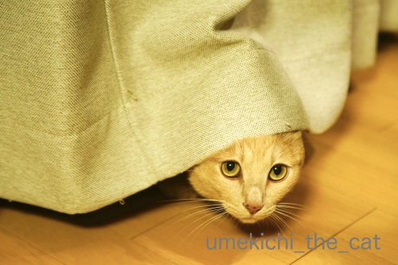
カーテンからひょっこり（これで「ひょっこりはん」という芸人さんの存在を知りました）
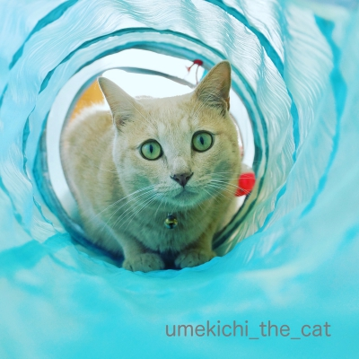
ニャン生初のキャットトンネル
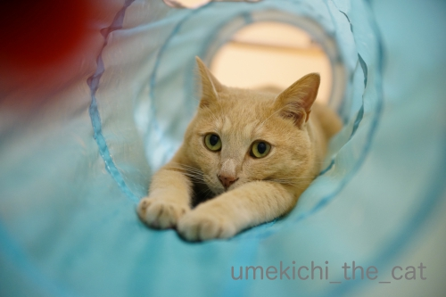
ウォータースライダー風
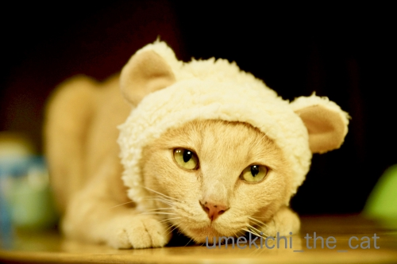
ねこくまちゃん（やさぐれ感あり）
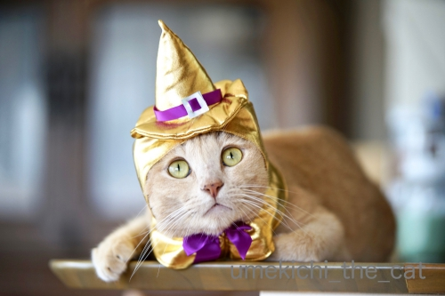
ハロウィンの魔女さん（ゴージャスでしょ）
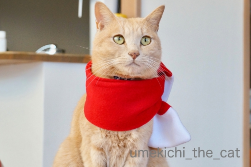
赤いマフラー（きりりっ）
あたりなんですが、悩むー！！
このところ時間ができると写真ライブラリーとにらめっこの日々です。
お返事書けないのはこのせいもあるのです・・・
どうぞお許しくださいませm(_ _)m
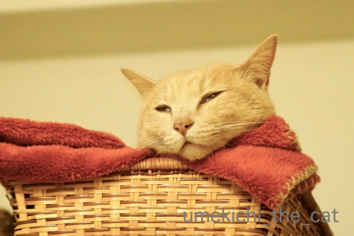
アルバムの中には変顔や白目写真は欠かせませんよ(*>艸<)
くつしたにゃんさんから伏見稲荷大社にある眼力社の豆書をいただきました！
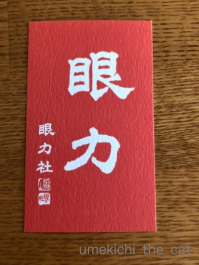
くつしたにゃんさんが伏見稲荷に行った日、この豆書が届いた日
針穴に糸が一回で通った。
ご利益かしら♪
くつしたにゃんさんありがとう！

カフェオレ色の梅吉

梅吉 2023年8月10日 永眠


梅吉と出会った譲渡会

犬猫の理由なき殺処分ゼロ
妄想広告
UMEKICHI 光

爆発的に早い！
時々攻撃的！
Thanks to Mr.Boss365
爆発的に早い！
時々攻撃的！
Thanks to Mr.Boss365

梅吉さん掃除機ごと持ち上げられそう。フォトブックはこれだけ傑作写真ばかりだと悩むでしょうねぇ。並べてみるとそれぞれ違う表情だし、梅吉さん色んなお顔するんですね。私はもちろん白目が好きです。(聞いてないか)
by zombiekong (2019-04-18 02:10)
うちの子は掃除機が怖くて近づきませんから
うちに来て作業しますか？（爆）
干支がらみの写真を表紙に持ってくると
並べたときに面白いかも？＾＾
by ぽちの輔 (2019-04-18 05:44)
掃除機に果敢にアタックする梅吉さん！すばらしいーー！
普通のニャンコは掃除機きらうとおもうんですけどね。
愛情たっぷりこもったフォトブックができそうですね。
候補写真、どれも良いですね。
毎年作られているなら、表紙に対してのテーマを作ると良いかも。
ぽちの輔さんの干支がらみというのも納得！
ハロウィンのにしたら、月をテーマにして、今年は10月、来年は別の月とかね。
by ChatBleu (2019-04-18 06:26)
梅吉さんの好奇心は無限ですね！
うちの猫は掃除気音が嫌いで逃げ回っていました(^_^;)
自分的には梅吉さんのウォータースライダー風が大好きです。
by kou (2019-04-18 06:36)
梅吉さん、クルリンガード～！音が苦手なのかな？
by ニコニコファイト (2019-04-18 06:50)
梅吉さん♪もぐじりこんでますね(^_^;)
吸われても気にしないところも
すごいです(*´Д`*)
by きぃ (2019-04-18 07:12)
ウププ、梅吉さんってば掃除機に果敢に
攻撃を仕掛けてますねぇ=(^.^)=
うちのニャンズは掃除機が近づくと
わーって逃げるので梅吉さんの姿はとても新鮮♪( ´▽｀)
フォトブックの表紙、いっその事候補写真
全部の梅吉さんにするとか( ^ω^ )
可愛い我が子の写真、選べませんよねぇ(⌒-⌒; )
by ニッキー (2019-04-18 07:52)
フォトブックは納得がいくまで作り込みたいと思う！！
なので思いっきりコレに時間を割いていいと思うわ^^
そうだなーーー。個人的には「ニャン生初のキャットトンネル」が好きだけど
他もいいよな〜〜。悩むねｗｗ
掃除機に果敢に挑む梅吉くん、なしてそんなに執拗にｗｗｗ
by リュカ (2019-04-18 08:40)
こんにちは。
梅吉君、楽しそう！！プロレス技？猫返し？以前ありましたね（笑）
小生猫「掃除機の音」を聞いただけで逃げます。羨ましいです。
ちぃ姐さんの「ケタケタ笑い」を聞きたかったですね？
フォトブックの表紙！！
「ウォータースライダー風」も良いですが「ねこくまちゃん」も良いな？
みんなどれも良い感じです。悩みますね。
「キャットトンネル」と「ウォータースライダー風」の２枚で
表紙と裏表紙（または内部一枚目？）の組み合わせも良いかもです。
ストーリー性があると面白そうです！？(=^･ｪ･^=)
by Boss365 (2019-04-18 09:58)
梅吉さん、色々と被り物させられちゃっていますね！
最近、ハズキルーペを買っちゃいました(^^)
by ma2ma2 (2019-04-18 10:27)
掃除機の何が梅吉さんをここまで高ぶらせるのでしょうね～(^▽^;)
お顔吸われても平気なんだ！
ウチのは掃除機に関してはただただ「無関心」です。
目の前横切ってもとことん知らん顔、ぜったいに動きません^^
フォトブック候補写真、トンネルのスライダーが好き(#^^#)
このお手手前出しポーズは梅吉さん抜群だと思います！！
by ゆきち (2019-04-18 12:22)
梅吉さんの掃除機へのかぶりつきは凄い迫力！でも楽しそうだにゃー(^^)
キャットトンネル可愛いね！波のチューブの中にいるみたい！
by チャー (2019-04-18 14:53)
うはは、吸われたいんでしょうか？
候補写真どれもいいです。はあはあ。
こりゃ選ぶのが難しそう。
ねこくまの「やってやってる」感がまたなんともww
by liang (2019-04-18 14:57)
梅吉さん、凄い迫力でトライが続きますね。
ちぃさんのケタケタ声と合わせて笑いたかった！（笑）
フォトブックの表紙は悩ましいですね〜
ウオータースライダー風、7月（夏）には良さそうです。
たくさん悩んで楽しんで、くださいね。
by kiki (2019-04-18 16:36)
かっわいいーーー(≧∀≦)
こんなに反応してくれるなら、何度も圧縮袋の
空気抜いちゃいますｗｗ
ついでに梅ちゃんを吸います(笑)
フォトブック、私も作りたいなぁと漠然と考えて
いましたが、早くしないといけませんよね＾＾
表紙候補、どれも捨てがたいけど、2枚目の
青いトンネルにＩＮしているのが好みです(*￣∇￣*)
青の洞窟ってタイトルで(*´ゝ艸･`)ﾌﾟﾌﾟ
写真の選定に困っちゃいますよねｗどれもかわいくて♪
by カトリーヌ (2019-04-18 17:45)
梅吉フォトブック。
表紙候補はどれも素敵で可愛いけど
私はトンネルの2枚かねこくまちゃんが好きだな～。
何となく表紙っぽくない？(*^-^*)
表紙のポストカード付きで販売希望！！買いたいよ～♪
by emi (2019-04-18 17:48)
おぉー！！早速ご利益が〜(((o(*ﾟ▽ﾟ*)o)))♡
タイムリーなお参りが出来て良かった♪
時々眺めるのもご利益がありそう！！
喜んで頂けたなら、へぇこら息切れして参って来た甲斐があったってもんだ〜（≧∇≦）
さて梅吉しゃま、フォトジェニック過ぎて選べない！！どれも載せたい！！
水色トンネルもお似合いだし、かぶりものは着こなしてるし…私もウォータースライダー風が吹く気に入ったかな〜あと赤いマフラー…ヒーローっぽい梅しゃま。惚れるわ(//∇//)
by くつしたにゃん (2019-04-18 19:13)
ケタケタ笑いを聴きたかった。残念です^^;
梅吉さん、激しいですね。面白いです。
写真ライブラリーに専念してくださいね＾＾
by riverwalk (2019-04-18 21:07)
果敢に掃除機ノズルに挑む梅吉さんすごい！！
音が気にならないのかなあ。^^;
フォトブック表紙候補写真、どれも良いですね。
悩んじゃう気持ち、よく分かります。^^)
by yes_hama (2019-04-18 21:54)
やさぐれ感 最高ですね（＾＾）
by (。・_・。)２ｋ (2019-04-18 23:42)
掃除機アタックする子、梅さま以外に見たことありません。
（吸われたい子はたまにいますよね^^）
ふつうは音で怖がりますよね！？
というか、その袋が、果たして密封の役目を果たしているのか気になります。。
（爪立ってるから・・・^^;）
フォトブック、毎年のお楽しみですね。
確かに数ある写真から、そう簡単には抽出できないですよね・・・。
by Ja-Kou66 (2019-04-19 00:06)
動画見ました！
凄いお手伝いっぷりー(^_^;)
何がそんなに許せないんやろねー？！
表紙用写真、ウォータースライダーがいいな。
by よーちゃん (2019-04-19 08:38)
キャットトンネル、うちのくーちゃんも使ってます＾＾。
走ってきて飛び込むのが好きらしく、廊下を激しく移動して、
気がつくと玄関に落っこちてます。
梅吉さん、勇敢だな〜☆掃除機の音平気、っていうか、
そこまでやるかって。お手伝いしたいのね〜。
by nachic (2019-04-19 09:52)
キャットトンネルで手を伸ばす梅吉くん可愛いです！でもやっぱり白目は外せませんよね。いい表情だわ(*^^*)
by palpal (2019-04-19 20:33)
お手伝い？
掃除機と喧嘩してるニャ（ﾟ□ﾟ）
by 英ちゃん (2019-04-19 23:10)
掃除機に果敢に挑む梅吉さんに男気を感じます(笑
うちのニャンズは掃除機を手に取っただけで逃げまどい高みを目指します。
クィ～ンとモーター音が鳴ればイカ耳になっておびえてますよ。
フォトブックって愛猫モノに限らず、旅行記でも途中で疲れても～いいわって
なりがちなのでご苦労お察しいたします(笑
あわや白目か？状態の梅吉さんの表情がツボりましたわｗ
by marimo (2019-04-20 11:44)
白目大好きですが、
あえてここは、キレイ目のすがすがしい青い色
に惹かれてサーフィンのような初キャットトンネル
開けたら、いきなり白目！の流れに期待します^m^
by ふにゃいの (2019-04-20 20:50)
おおっと梅吉さん、逆さからの猫キック～！
からの~かぶりつき！
お次はなんと、押さえ込みだ～
って、古館一郎に実況中継入れてほしい（笑）
by でんさん (2019-04-20 23:31)
梅吉さん、渾身のアタック！すごい！
持ち上げられそう～吸われてもひるまないとは。
うちのはちょっと間違って吸いかけたら一目散に逃げたものです。以来遠くから見てました。そして、掃除機が動かないでいるときに、そ～と近寄ってパンチしてました。これがパンチするとホースが動くので、けっこうにらみ合いがつづいて＾＾；
表紙候補の写真、どれも可愛い～！ これは迷いますね。
ウォータースライダー風のが可愛いな～＾＾
by sana (2019-04-21 15:56)
ご投票ありがとうございました。^ ^
先生にもよろしく！
by 小松達也 (2019-04-21 17:53)
皆様！お返事は明日、月曜日にさせてください！
いつもごめんなさいねー(〃▽〃)
by ちぃ (2019-04-21 22:05)
zombiekongさん＞
ぶおーって吸われても全然気にしてないので
（今は無理だけど）幼い頃は吸って持ち上げてましたwww
白目推し、ありがとうございます！
いつかは表紙を飾りたいと思っているのですが
やっぱり可愛い系を選んじゃいます(⌒-⌒;
ぽちの輔さん＞
ぽちの輔さん宅ならゆっくり作業できそうですねー！(*>艸<)
12にゃんさんも（ですよね？）いたら
一人くらい果敢に戦う子が居そうですがみんにゃ賢いんだな・・・
干支がらみ・・・その手もありましたね！！
ChatBleuさん＞
梅吉は普通じゃないんですよー0(≧▽≦)0
今は大丈夫だけど幼い事は掃除機に絡んできて
まともに掃除出来ませんでしたw
地震とか雷なんかの自然現象以外は怖いものがないんですよ(⌒-⌒;
困ったものです・・・
フォトブックは今回が４冊目になります＾＾梅吉の年齢と一緒♪
表紙のテーマなんて考えていなくて
各年のベストショットにしようとするから迷うんですね。
テーマかぁ〜。それも悩みますwww
kouさん＞
好奇心も強いし怖いもの知らずで困ったものです(⌒-⌒;
掃除機を始め電化製品で怖いものはありません。
ドライヤーも全然平気。
今は大丈夫ですが幼い頃は色々苦労しました！
それも楽しい思い出ですけどー＾＾
ニコニコファイトさん＞
音苦手なら来ないでー！って感じですwww
ホント、困ったのです（←全然困ってない）
きぃさん＞
でんぐり返し、でんぐり返しで攻めてきますよw
掃除機で吸うと逃げるどころか
「なんやー！やるんかー！！」とさらに燃えちゃいますwww
by ちぃ (2019-04-22 20:09)
ニッキーさん＞
掃除機から逃げる、羨ましいです！
梅吉はなぜか掃除をしたい所にで〜んと座って
絶対避けてくれないのです。
掃除機でツンツンってするとがーっ！と向かってくるので
掃除がちっとも進みません；；
フォトブックの表紙、コラージュの手もありますね！
そうするとますます使いたい写真が増えてモザイク画見たいな表紙になりそう(*>艸<)
リュカさん＞
そうなの！あと３ヶ月・・・・
作り込みの時間も増えたけど悩む時間も増えたよー！（爆）
でも10連休中にアウトラインは決めるわ！！たぶん・・・
表紙、そうなの！
ニャン生初のキャットトンネルが一番表紙らしいでしょ＾＾
でもあえて変化球でという気持ちもむくむくですw
いっそ掃除機と戦う梅吉にするか・・・
Boss365さん＞
プロレス技「URS」ですね！
そうか！掃除機とおとーさん腕は梅吉にとっては同じなのかな〜w
はたして練習台にされているのはどっちなんでしょうか(≧▽≦)
フォトブック、良いこと聞いたー！
そうですよね＾＾裏表紙という手があった。目からウロコです。
フォトブックの定型レイアウトできるか調べてみよう！！
ma2ma2さん＞
梅吉の被り物は我が家の季節の風物詩ですから＾＾
ハズキルーペ、評判良いですよね〜。
試してみてとってもよく見えたらそれはそれでショックかも、なので
まだ手に取ったことはありません(*>艸<)
ゆきちさん＞
掃除機にお顔やお腹、おしっぽを吸われても全然平気です。
吸われると逃げるどころか向かってきますよ(⌒-⌒;
掃除機が目の前を横切ると「なにすかしとんねんっ」と因縁つけてきますw
生まれながらのファイターなのでしょうねぇ・・・梅吉www
ウォータースライダー・・・
あ〜おてて出し、我が子ながら可愛いんですよね・・・
ほんと、迷います0(≧▽≦)0
チャーさん＞
圧縮袋を吸い始めると寝ていたのに起き上がってやってくるんですよ。
掃除機にかぶりつく気迫と根性は本当にすごいですwww
キャットトンネルの綺麗なブルーって表紙向きなんですよね・・・
ああ、悩みます。。。
liangさん＞
吸われたい欲求、私も「吸われたいのか？」と思って
換毛期に背中に掃除機かけたらねこぱんち連打でした(-_-メ)
ねこくまちゃんは「おつきあい感」が溢れてますよねーw
付き合いきれずにそのまま酔いつぶれちゃった人
みたいな写真もあるんですよ(*>艸<)
kikiさん＞
わかりました＾＾
来年あたりケタケタ入り動画もアップする事に致します(*>艸<)
音量注意の但し書きが必要になりそうですよw
フォトブック締切日を伸ばしたので
またまた楽しく悩ましい時間が増えました！
梅吉に遊んでよーと催促されない程度に時間を割きます！！
カトリーヌさん＞
お、カトリーヌさんうちに来て圧縮作業しますか(*>艸<)
フォトブックは毎年悩ましい楽しい時間になってます。
今年で４冊目。
一年の出来事を振り返る構成にしたい
梅吉のベストショットを一枚でも多く載せたい
でもなるべく低料金でと希望がたくさんw
紙とレイアウトにあまりこだわらなければ意外にお安く出来るんですよ。
一番最初に作ったのは500円くらいだったかな。
だんだんしたいことが増えて昨年は2000円クラスにバージョンアップ。
もう後戻りはできません(⌒-⌒;
emiさん＞
そうそう！表紙っぽいかどうかも重要な決め手で・・・
ほかにも使いたい写真はあるんだけど表紙としてはね、
と省いたものもたくさんあります。
梅吉ポストカード・・・いいですねぇ＾＾
ブログが10周年を迎えたら
作って希望する皆さんにお渡ししようかしら。
それまでブログを続けないとねー！
くつしたにゃんさん＞
「眼力」豆書でこれ以上の老眼信仰（違う進行）は食い止められるでしょう＾＾
もしも進んじゃったら今度は私が詣でて来ますよ！みんなのために！！
フォトブックの表紙はコラージュ、表＆裏表紙などアイディアをいただきましたよ〜。
さてさてどうなるか・・・
表紙にならなかったものはもちろん中の方で採用します！
riverwalkさん＞
ケタケタ笑い、来年は音量注意の但し書き付きで
アップしちゃおうかしら・・・(*>艸<)
フォトブック、締め切りが延びたのでちょっとのんびりしながら
専念したいと思います！
yes_hamaさん＞
掃除機の音は全然怖がらないです。
梅吉が嫌がるのは炭酸飲料のふたを開ける時の「プシューっ」という音ですw
掃除機の機械音の方が断然怖いと思うんですけどねぇ・・・・
不思議な子ですwww
フォトブックの表紙、まだ悩んでます(⌒-⌒; )
2kさん＞
こんなやさぐれ顔、どこで覚えて来たんでしょうねー(⌒-⌒;
by ちぃ (2019-04-23 15:01)
Ja-Kou66さん＞
アタックはしますが吸われるのは本意ではないようですw
ねこぱんちの連打が帰って来ますよ(⌒-⌒;
お、さすが目の付け所が！！
そうなんですよー。
圧縮袋はビニールが厚めなので簡単に穴はあきませんが
ワンシーズンしか持ちませんw
知らず知らず爪が食い込んでいるのでしょうね・・・
もしかしたら押入れで梅吉がガブガブしているのかも。
フォトブック・・・まだ悩んでます0(≧▽≦)0
よーちゃん＞
掃除機の何が梅吉の闘争心に火をつけるのでしょうねw
今は圧縮袋の時だけですが
幼い頃は普通にお掃除するのも大変だったのですよ(*>艸<)
表紙、ウォータースライダーに人気が集まっております！！
nachicさん＞
くーちゃん、キャットトンネルに入って遊ぶというより
キャットトンネルごと移動して遊ぶのですねw
さすがの子猫パワーwww
その勢いからすると掃除機に戦いを挑む日も遠くはない！？
palpalさん＞
白目は毎年表紙候補に上がるもいつも外しちゃうんですよね・・・
今年こそは！？
英ちゃんさん＞
断言します！これはお手伝いです(*>艸<)
掃除機さんとは（圧縮袋を吸ってない時は）仲良しさんなんですよ＾＾
by ちぃ (2019-04-23 16:02)
marimoさん＞
漢、梅吉はナチュラル・ボーン・ファイターってやつでしょうかw
最近は炭酸メーカーからボトルを外す時の
「ぷしゅ〜っ」という音と自然現象系の音にビビりますが
それ以外は怖いものはありません(⌒-⌒;
フォトブック、そうそう！途中で何が何だかわからなくなって
やっつけ仕事になりがちです。
そうならぬように少しずつと思っているのですがなかなかね〜。
梅吉は白眼が得意なんですよ！
これから夏場がハイ・シーズンになるので
立派な白眼をご覧に入れますのでご期待ください！！
ふにゃいのさん＞
ふふふ(ΦωΦ)
高いところに持っていって落とーす！みたいな感じですね＾＾
了解しました！
梅吉はオチがないとダメですよねーwww
でんさん＞
梅吉は技も多彩なので
とても熱い実況になりそうですw
わたしのケタケタ笑いは観客席の盛り上がり音として使えそうですネ(*>艸<)
sanaさん＞
動かないものにそ〜っとパンチ、わかります！！
先代猫がそうでした。
そして自分のパンチで動いたホースにびっくりして
ものすごい勢いで逃げていく・・・www
梅吉は動いていない掃除機には無関心なので
吸引力が上がった時に一段高くなるモーター音に
「むかっ」と来るのかな、と思ってます(*>艸<)
フォトブックの表紙、ウォータスライダーに人気が集まってます＾＾
小松達也候補＞
今年は選挙イヤーなのでまた機会がありますよ＾＾
あちこちの選挙に顔を出す「ドクター中松」的活躍を期待しておりますwww
by ちぃ (2019-04-24 11:13)